Lens is a mountable Phoenix LiveView SQL notebook pointed at the host Ecto Repo. It is the PgHero-shaped tool you mount at /lens: ask a question, save it, pin it to a dashboard, and mask PII/PHI in every output.
It is not Metabase. There is no sidecar JVM and no god-mode warehouse user. Queries are view-only: SELECT / WITH (optional EXPLAIN) only — DELETE, UPDATE, and INSERT are rejected. Field policy runs on the grid, CSV, JSON, embeds, MCP tool results, and the audit log.
This page is a tour of the product as it looks in the dummy app (dummy/ on http://localhost:4000/lens), plus how queries are designed for PostgreSQL (default) and DuckDB (optional). Agents can drive the same notebook over MCP at /lens/mcp.
Install and auth: Phoenix.md. MCP server: MCP.md. Threat model: Policy.md. Host pipeline as permissions: Permissions.md.
This library is not HIPAA or GDPR certified. You are the operator.
Home
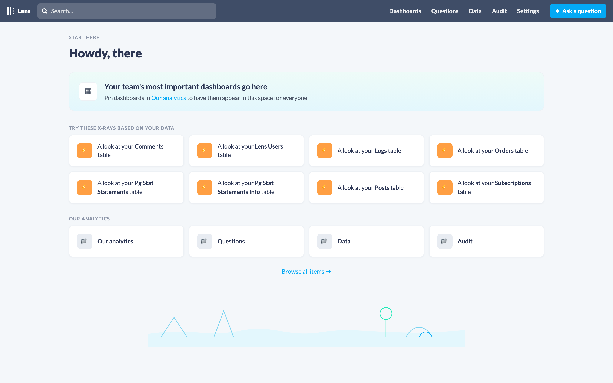
The shell is a top bar: search, Dashboards, Questions, Data, Audit, Settings, and Ask a question. Home lists x-rays for discovered tables and any dashboards you pin.
Dummy data is a small SaaS-shaped schema: users, orders, posts, comments, logs, subscriptions. Configured masks in the dummy app:
config :phoenix_lens,
repo: Dummy.Repo,
masked_fields: [:email, :first_name, :phone, :ip, :author_email]Ecto redact: true (for example Dummy.Accounts.User.email) is merged in automatically.
Asking a question
/lens/ask has two editors. Notebook compiles filters, metrics, and grouping into SQL. Native query is a SQL textarea. Both share the same preview pane, the same PhoenixLens.Query.run/2 path, and the same field policy.
Notebook
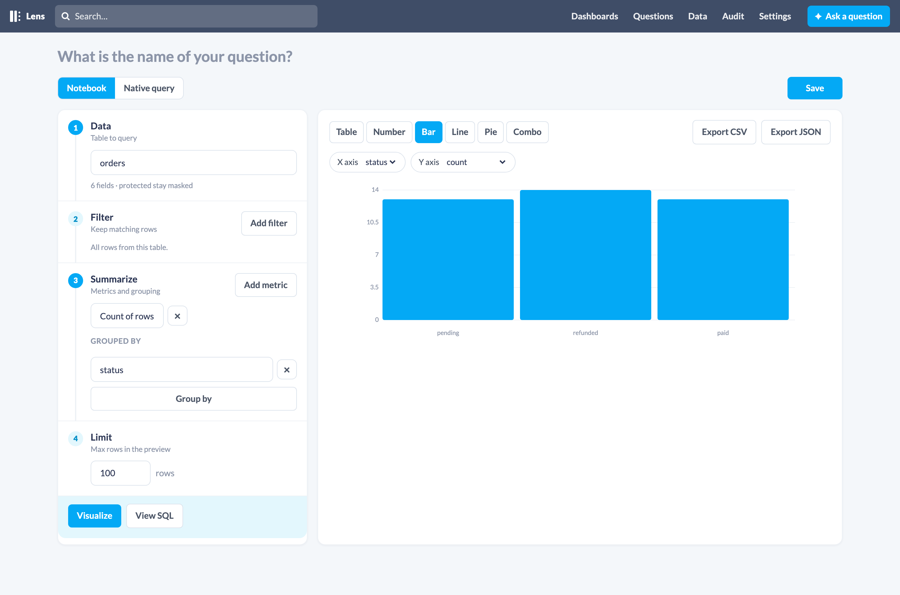
- Data — pick a table. Protected columns stay labelled; picking a table auto-previews
SELECT *. - Filter — equals, contains, empty, comparisons.
containsbecomesILIKE. - Summarize — count / sum / avg / min / max, plus Group by.
- Limit — preview cap (hard ceiling is still
max_rows, default 10_000).
Visualize re-runs the compiled SQL. The preview switches Table / Number / Bar / Line / Pie / Combo. Charts coerce Y to a numeric column or Count of rows; a masked text column is not a valid Y axis.
View SQL shows the generated statement, for example:
SELECT "status", count(*) AS "count"
FROM "orders"
GROUP BY "status"
LIMIT 100Save stores the SQL (not the notebook AST) on the host Repo.
Native query
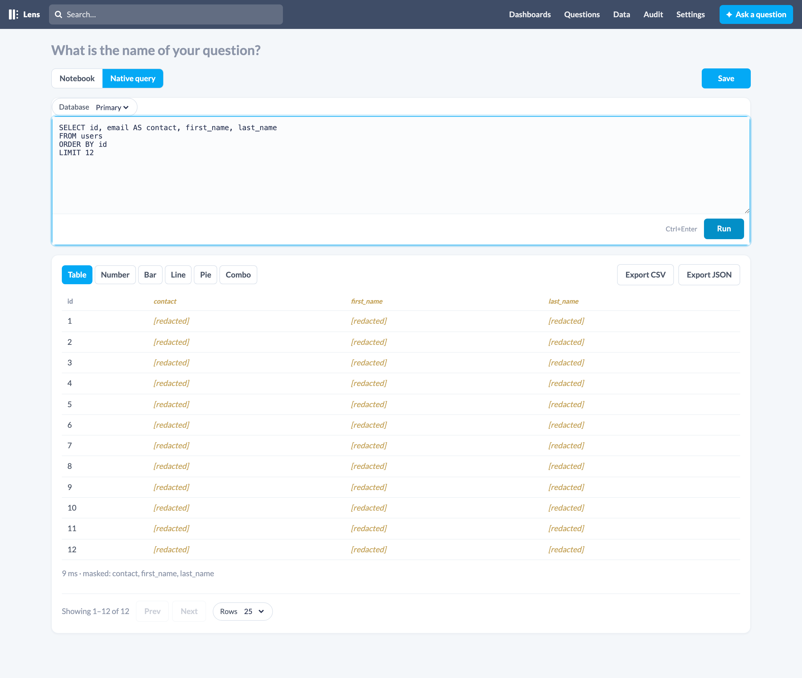
Type SQL, then Run or Ctrl+Enter (Cmd+Enter on macOS). Autocomplete uses Ecto schemas plus information_schema (or DuckDB’s catalog when that engine is on). Type after FROM / JOIN for tables, users. for columns.
The dummy query that shows policy on an alias:
SELECT id, email AS contact, first_name, last_name
FROM users
ORDER BY id
LIMIT 12contact is still [redacted]: masking keys off the origin identifier, not only the output name. first_name is in masked_fields; last_name is a runtime global rule from Column protection.
Catalog

Data (/lens/catalog) lists tables from the current engine and Ecto schemas. Protected fields are marked and rendered in the protected colour. Ask → opens the notebook on that table.
When the engine is DuckDB, the same page is sourced from attached databases (repo.users also appears as users via host views). Internal DuckDB catalogs may show as memory:

Questions and dashboards
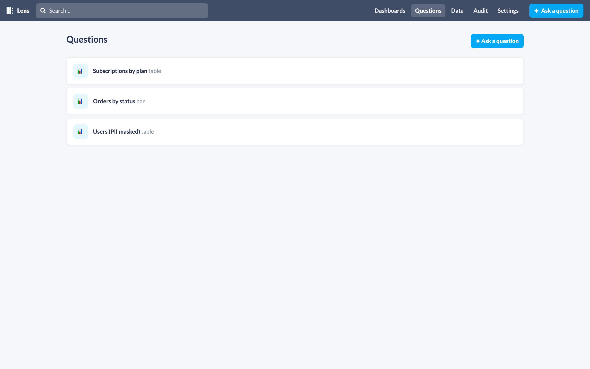
A saved question is a name, SQL, viz, and database id. Opening it re-runs through Query.run/2. The editor, Export CSV, Delete, and Save sit in the toolbar. Pin the question onto a dashboard from the same page.
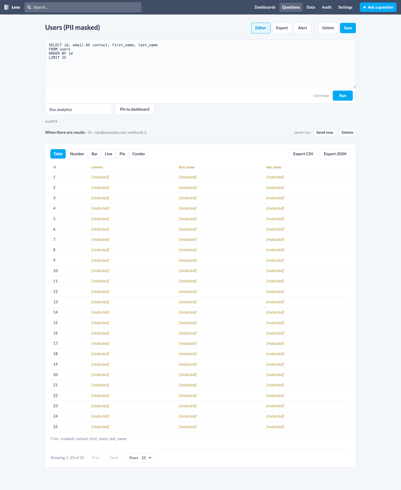
Dashboards are folders of cards. Each card is a saved question. Optional date-range filters wrap the SQL when a date column is set. Edit turns on a 12-column board: drag a card to move it, pull the corner to resize, then Save. Cancel drops unsaved arrangement.
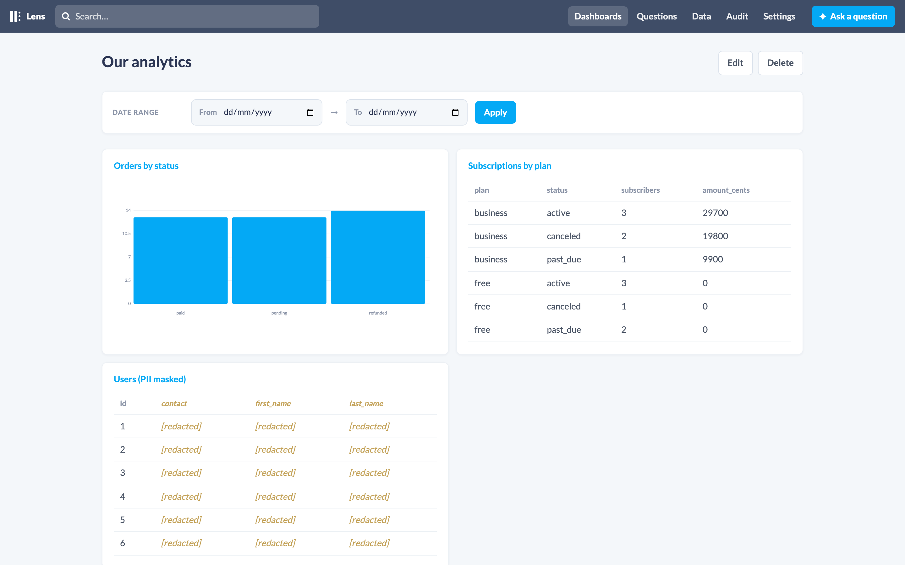
QuestionCard embeds the same result (and the same policy) in a host LiveView:
<.live_component
module={PhoenixLens.Components.QuestionCard}
id={"q-#{id}"}
question_id={id}
actor={@current_user}
/>Audit
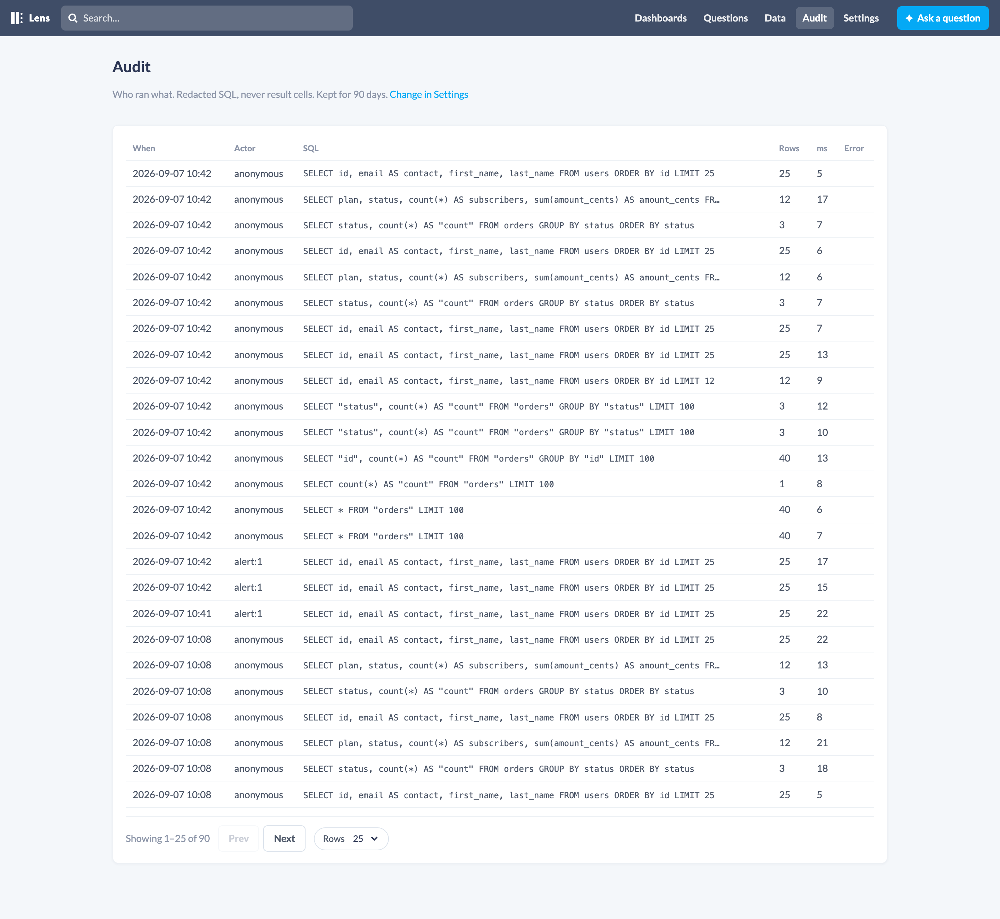
Every run records who, redacted SQL, row count, duration, and error. Result cells are never stored. Actor is conn.assigns[:current_user] (or actor_assign:); a struct with :id is stored as user:<id> — never the email.
Pagination is 25 / 50 / 100. Retention is Settings → Audit log (7, 30, 90, 180, 365 days, or forever). Default is 90 days. Expired rows are deleted on record, on the audit page, and when retention is saved.
Settings
PostgreSQL vs DuckDB

The default engine is PostgreSQL: Lens runs your SQL on the host Repo (or a replica URL) inside a read-only transaction.
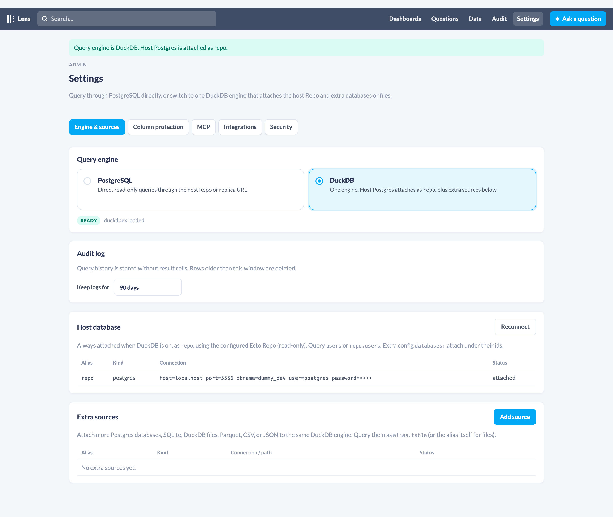
DuckDB starts an in-process engine, attaches the host Repo read-only as repo, and lets you attach extra sources to that one connection. Questions, dashboards, settings, and audit still live on the host Repo. Field policy still runs on every DuckDB result.
DuckDB is optional. The dummy app already depends on it; a host app must add:
{:duckdbex, "~> 0.4"}Without the NIF, Settings still render and switching explains the missing dep.
Extra sources
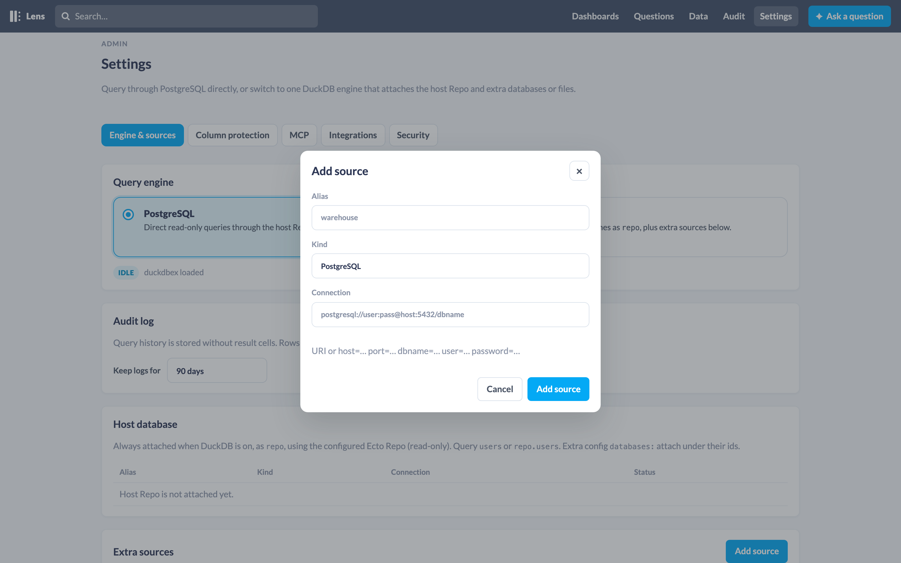
Add source is a modal: alias, kind, connection string or path. Kinds: Postgres, MySQL, SQLite, DuckDB file, Parquet, CSV, JSON. File sources become a view named after the alias. Remote HTTP/S3 paths load the httpfs extension.
Query extras as alias.table (or the alias itself for files). DSNs are redacted in the table (password=••••).
Column protection
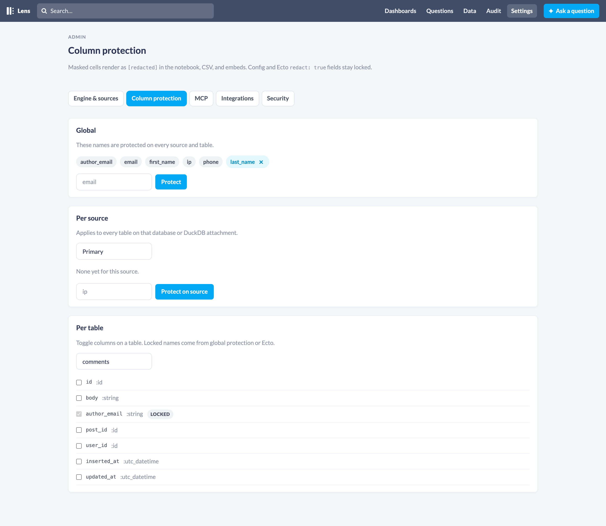
/lens/settings/protection adds runtime masks on top of config and Ecto redact: true:
| Scope | Effect |
|---|---|
| Global | Column name is masked on every source and table. Config / redact: true names are locked chips. |
| Per source | Masked on that database id or DuckDB alias. |
| Per table | Masked only when the SQL FROM / JOIN list includes that table. users.email does not mask subscriptions.email. |
Locked chips cannot be removed from the UI; change masked_fields or the schema instead.
MCP
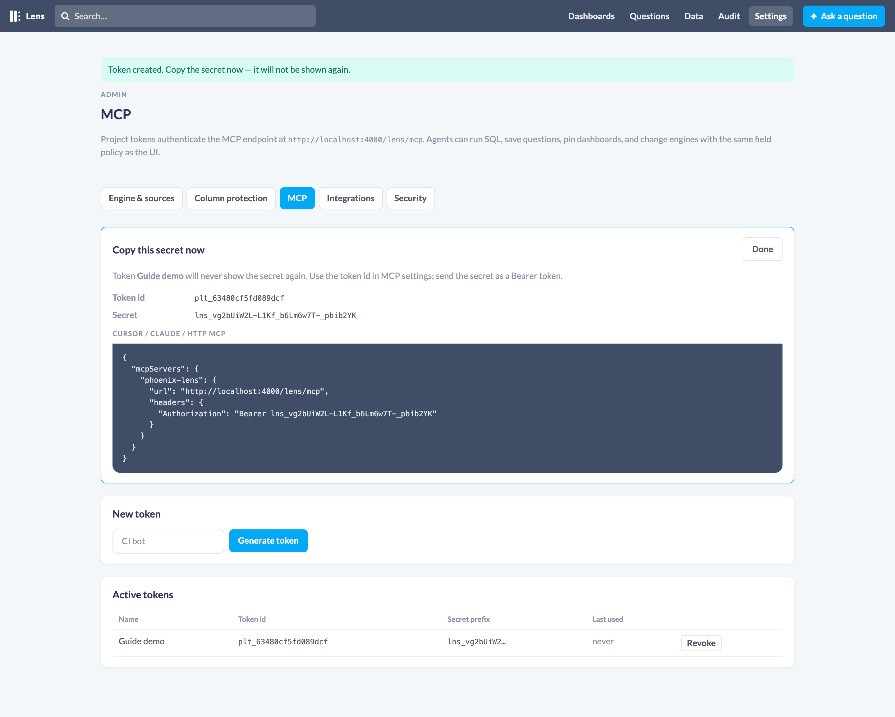
Settings → MCP (/lens/settings/mcp) issues project tokens for the Streamable HTTP MCP server at /lens/mcp. Each token has a public token id (plt_…) and a secret (lns_…) shown once. Clients send Authorization: Bearer <secret>.
Tools cover the same surfaces as the UI (catalog, SQL, questions, dashboards, audit, engines, sources, column protection). Field policy still masks cells as [redacted]. Creating and revoking tokens is UI-only. Setup and the tool list: MCP.md.
Integrations and alerts

Settings → Integrations configures SMTP and named webhooks. On a saved question, Alert sends email or a JSON POST when the question returns rows, returns none, or crosses a numeric goal. Masked cells stay [redacted]. Details: Alerts.md.
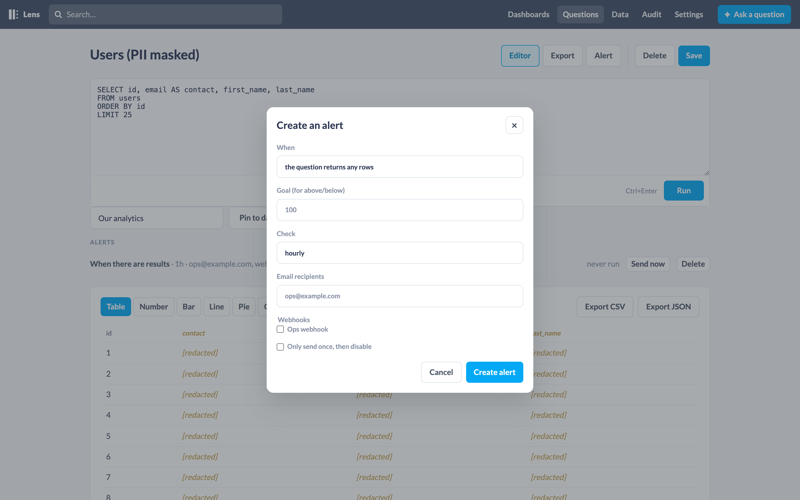
Security

Settings → Security (/lens/settings/security) is optional. Enable an authenticator app (Google Authenticator, 1Password, Authy, …) and/or register a passkey (Touch ID, Face ID, Windows Hello, security key). After either is on, visitors must unlock at /lens/unlock before the notebook. MCP tokens skip this step. Host pipeline auth is still required. Locked out: PhoenixLens.Auth.reset!() in IEx.
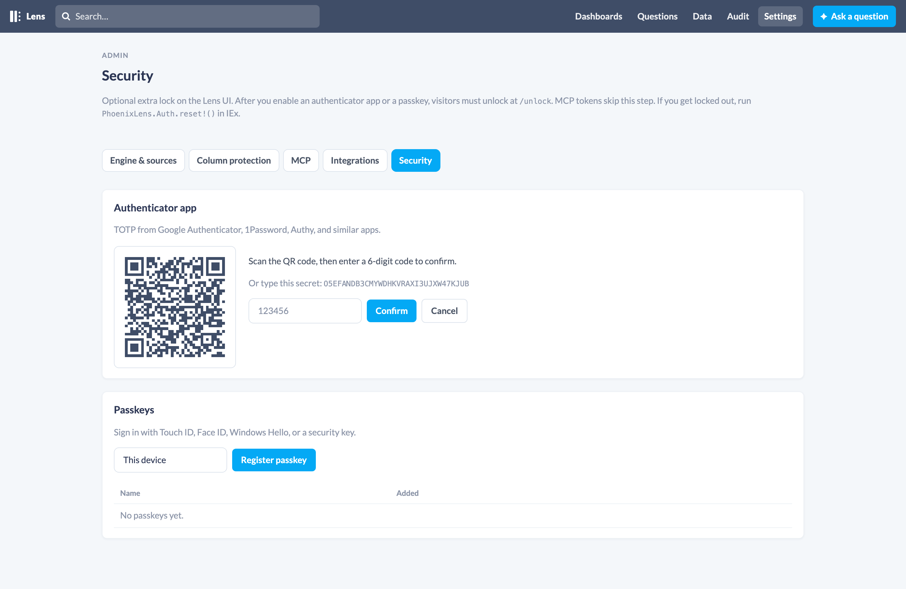
Details: Phoenix.md, Permissions.md.
Query design
Every notebook click and every Run lands in PhoenixLens.Query.run/2. There is no public unmasked path.
editor / notebook
│
▼
SQL.validate/1 one statement; SELECT | WITH | EXPLAIN …
│
▼
Settings.engine()
┌───┴────┐
▼ ▼
PostgreSQL DuckDB.Server
read-only ATTACH + SELECT
timeout timeout + row cap
└───┬────┘
▼
Policy.apply/4 origin + output name + computed expr
▼
%Result{} :redacted cells
│
├── grid / charts
├── CSV / JSON export
├── QuestionCard embed
├── MCP tools/call
└── Audit.record (SQL redacted, no cells)What SQL is allowed
PhoenixLens.SQL.validate/1:
- Exactly one statement
- First keyword
SELECTorWITH, orEXPLAINof those - Rejects
INSERT/UPDATE/DELETE/DROP/ALTER/CREATE/COPY/ATTACH/DETACH/INSTALL/LOAD/ …
ATTACH and INSTALL happen only inside the DuckDB engine, never from the editor.
Notebook → SQL
PhoenixLens.Notebook is a small compiler, not a query planner. Identifiers are quoted. Filters AND together. Aggregations without a group-by still emit count(*) when you add a metric. The saved artifact is the SQL string.
Origin-aware masking
SQL.column_origins/2 walks the SELECT list. A column is masked when:
- the output name is protected (
SELECT email) - the origin identifier is protected (
SELECT email AS contact) - the SELECT item is a computed expression that mentions a protected identifier (
first_name || last_name)
Table-scoped rules use SQL.table_refs/1 (FROM / JOIN, including repo.users). Double-quoted identifiers are kept; only single-quoted string literals are stripped before the scan.
Result shape
%PhoenixLens.Result{} columns stay the SQL names; masked cells are the atom :redacted, rendered [redacted]. masked_columns is listed under the grid (see the Users card on the dashboard screenshot). Do not log result rows.
PostgreSQL engine
Default. Query opens a transaction on the configured Repo (or a Postgrex connection for databases: URLs) and sets:
SET LOCAL transaction_read_only = on
SET LOCAL statement_timeout = 5000 -- timeout_ms, default 5sThen it runs the user SQL with log: false, truncates to max_rows (default 10_000), applies policy, and audits.
Prefer a read replica for the query target. Metadata (questions, dashboards, settings, audit, protection rules) always uses config :phoenix_lens, repo:.
config :phoenix_lens,
repo: MyApp.Repo,
timeout_ms: 5_000,
max_rows: 10_000,
databases: [
primary: [repo: MyApp.Repo],
analytics: [url: System.get_env("ANALYTICS_DATABASE_URL"), name: "Analytics"]
]A replica role that can SELECT but not write application tables complements masking; it does not replace it. Aliases still have to be masked in the UI.
Postgres-first is the right default: no NIF, no extension download, one less failure mode for the notebook you actually mount in production. See ADR-004.
DuckDB engine
Use DuckDB when one question needs to join the host Repo with another Postgres, MySQL, SQLite, Parquet, CSV, or JSON without standing up another BI box.
On switch (Settings, or PhoenixLens.Settings.put_engine("duckdb")):
- An in-memory DuckDB starts
- Extensions load as needed:
postgres,mysql,sqlite,json,httpfs - Host Repo attaches
READ_ONLYasrepo - Host public/main tables are also aliased as views, so
usersandrepo.usersboth work - Extra sources
ATTACH(orread_csv_auto/read_parquet/read_json_autoas views)
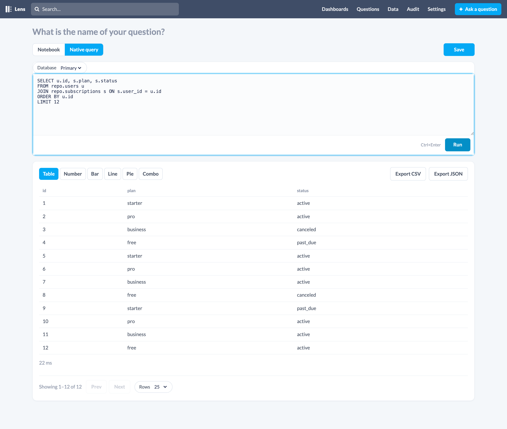
SELECT u.id, s.plan, s.status
FROM repo.users u
JOIN repo.subscriptions s ON s.user_id = u.id
ORDER BY u.id
LIMIT 12Across extra sources the same idea holds:
SELECT u.id, b.sku, p.plan
FROM repo.users u
JOIN billing.orders b ON b.user_id = u.id
JOIN plans p ON p.user_id = u.idplans here would be a CSV/Parquet view (the dummy app ships dummy/priv/sample_plans.csv you can attach as kind csv, alias plans).
Config-only extras, if you do not want them in the Settings UI:
config :phoenix_lens,
engine: :duckdb,
duckdb_sources: [
%{alias: "billing", kind: "postgres", dsn: System.get_env("BILLING_DATABASE_URL")},
%{alias: "plans", kind: "csv", dsn: "priv/sample_plans.csv"}
]User SQL still cannot ATTACH. Timeouts and row caps still apply. Origin-column masking uses the SELECT list (DuckDB has no Postgres RowDescription OIDs).
Dummy app
cd dummy
docker compose up -d
mix setup
mix phx.server
Postgres is on host port 5556 (dummy_dev). Open http://localhost:4000/lens and run the native query above: contact / first_name / last_name render as [redacted]. Switch the engine in Settings to try DuckDB against the same tables.
The dummy app depends on {:phoenix_lens, path: ".."} and {:duckdbex, "~> 0.4"}. After beam, CSS, or JS changes, restart mix phx.server so /lens/assets is not an old build.
MCP
The dummy app already mounts PhoenixLensWeb.Plugs.MCP at /lens/mcp. Generate a token in Settings, then point an MCP client at that URL.
{
"mcpServers": {
"phoenix-lens": {
"url": "http://localhost:4000/lens/mcp",
"headers": {
"Authorization": "Bearer lns_…"
}
}
}
}run_sql is still SELECT/WITH only. Audit actor is mcp:<token_id>. Host mount and the full tool list: MCP.md.
Related
- Phoenix.md — install, mount, auth, multi-db, embed
- MCP.md — MCP server, project tokens, tools
- Alerts.md — email and webhook alerts
- Policy.md — what is protected, known limits
- Permissions.md — host pipeline is the permission model; optional 2FA / passkeys
- ADR-001 — in-process, not a clone
- ADR-002 — policy on every sink
- ADR-003 — replica, timeout, row cap
- ADR-004 — optional DuckDB engine